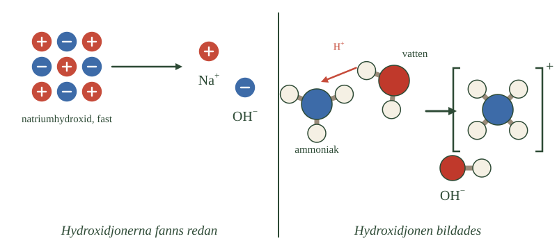

- Hydroxidjonen, \(\ce{OH-}\), består av en syreatom och en väteatom
- Den har en negativ laddning
- Den kan ta emot en vätejon
- Då bildas en vattenmolekyl
- En bas är ett ämne som kan ta upp vätejoner
I syrorna handlade allt om vätejonen — partikeln som syran avger. Nu vänder vi på det och tittar på den partikel som kan ta emot en vätejon.
En jon du redan mött
Hydroxidjonen, \(\ce{OH-}\), dök upp redan i repetitionen. Den är en sammansatt jon, alltså flera atomer som sitter ihop och tillsammans har en laddning. Här är det en syreatom och en väteatom med en gemensam negativ laddning.
Det negativa är nyckeln. En vätejon är positiv, och olika laddningar attraherar varandra — precis som du lärde dig i första repetitionsavsnittet.
Vad som händer när de möts
Kommer en vätejon i närheten av en hydroxidjon fastnar den direkt.
Tänk efter vad som blir kvar. Hydroxidjonen består av en syreatom och en väteatom. Lägger man till ytterligare en väteatom har man en syreatom och två väteatomer — alltså en vattenmolekyl.
Och laddningarna? En plus och en minus tar ut varandra, så molekylen blir neutral.
Det är därför hydroxidjonen är så viktig. Den kan plocka bort vätejoner ur en lösning, och det som blir kvar är helt vanligt vatten.
Definitionen av en bas
Nu kan vi säga vad en bas är.
En bas är ett ämne som kan ta upp vätejoner.
Lägg märke till hur det speglar syrorna. En syra avger vätejoner, en bas tar upp dem. De är varandras motsatser, och det är därför de kan reagera med varandra.
Men här kommer något viktigt: definitionen säger ingenting om att basen måste innehålla hydroxidjoner. Det finns baser som gör det, och baser som inte gör det — och det handlar nästa del om.
- Hydroxidjonen är en sammansatt jon med negativ laddning
- Den har fria elektronpar och kan därför ta emot en vätejon
- \(\ce{H+ + OH- -> H2O}\)
- En bas är ett ämne som kan ta upp vätejoner
- Alla baser innehåller inte hydroxidjoner från början
När vi studerade vatten mötte vi hydroxidjonen, \(\ce{OH-}\). Hydroxidjonen är en sammansatt jon som består av en syreatom och en väteatom. Tillsammans har de en negativ laddning.
Hydroxidjonen är viktig när vi ska förstå baser. Den har fria elektronpar — elektronpar som inte delas med någon annan atom — och kan därför ta emot en vätejon, \(\ce{H+}\). En vätejon består egentligen bara av en proton, och den binder till just ett sådant fritt elektronpar.
När hydroxidjonen tar upp en vätejon bildas en vattenmolekyl:
Detta leder oss till den viktigaste definitionen av en bas:
En bas är ett ämne som kan ta upp vätejoner.
Det betyder däremot inte att alla baser innehåller hydroxidjoner från början. Hydroxidjoner kan uppstå på olika sätt när ett basiskt ämne kommer i kontakt med vatten.
Varför hydroxidjonen är en så bra protonmottagare
Standardtexten sa att hydroxidjonen har fria elektronpar och därför kan ta emot en vätejon. Två saker samverkar, och båda drar åt samma håll.
Det första är laddningen. Hydroxidjonen är negativ, vätejonen positiv, och de attraherar varandra på avstånd. Redan innan de möts dras de mot varandra.
Det andra är de fria elektronparen. Syreatomen i hydroxidjonen har tre elektronpar som inte delas med något — de sitter kvar på syret och pekar ut i rummet. En proton utan eget elektronskal söker sig just till sådana par.
Jämför med kloridjonen. Den är också negativ och har också fria elektronpar, men den binder protoner mycket svagare. Skillnaden är att klor är en stor atom där laddningen är utspridd, medan syre är liten och kompakt. Laddningstätheten hos hydroxidjonen är betydligt högre.
Det är därför saltsyra är en stark syra: kloridjonen tar ogärna tillbaka sin proton. Och det är därför hydroxidjonen är en så effektiv bas: den tar emot mycket gärna.
Baser utan hydroxidjoner
Definitionen säger att en bas tar upp vätejoner, inte att den innehåller hydroxidjoner. Det öppnar för fler baser än man först tror.
Vilket ämne som helst med ett fritt elektronpar kan i princip fungera som bas. Ammoniak är det vanligaste exemplet, men även vatten kan det — som du såg i syrornas fördjupning, där vattnet tog emot protonen från saltsyran.
Också de joner som blir kvar efter en svag syra fungerar som baser. Acetatjonen kan ta tillbaka den proton ättiksyran avgav, och det är just därför jämvikten finns.
Om modellen: standardtexten introducerar baser via hydroxidjonen, vilket är rätt ingång eftersom hydroxidjonen är den vanligaste. Men definitionen är vidare än så. En bas är inte ett ämne av en viss sort — det är en roll ett ämne kan spela i en reaktion.
- En basisk lösning innehåller många hydroxidjoner
- Vissa baser innehåller hydroxidjoner redan från början
- Andra bildar hydroxidjoner genom att reagera med vatten
- Natriumhydroxid är ett exempel på det första
- Ammoniak är ett exempel på det andra
En basisk lösning innehåller många hydroxidjoner. Men hur hamnar de där?
Det finns två olika sätt, och skillnaden mellan dem är den viktigaste saken i hela avsnittet.
Väg 1: hydroxidjonerna fanns redan
Natriumhydroxid är exemplet. Ämnet är uppbyggt av joner redan i fast form — natriumjoner och hydroxidjoner, ordnade i ett jongitter precis som koksalt.
Lägger du natriumhydroxid i vatten händer samma sak som när salt löses. De polära vattenmolekylerna lägger sig runt jonerna och drar isär dem, och jonerna blir fria i lösningen.
Hydroxidjonerna kommer alltså inte från vattnet. De fanns i natriumhydroxiden hela tiden och frigjordes bara.
Kaliumhydroxid och kalciumhydroxid fungerar likadant.
Väg 2: hydroxidjonerna bildas
Ammoniak fungerar helt annorlunda, och det är därför den är så bra att känna till.
En ammoniakmolekyl innehåller ingen hydroxidjon. Den består av en kväveatom och tre väteatomer, och det finns inget OH någonstans i den.
Ändå blir en ammoniaklösning basisk. Så var kommer hydroxidjonerna ifrån?
De kommer från vattnet. Ammoniakmolekylen tar en vätejon från en vattenmolekyl. Ammoniaken blir då en ammoniumjon, och vattenmolekylen som förlorat sin vätejon är inte längre vatten — den har blivit en hydroxidjon.
- Var hydroxidjonerna fanns från början i den vänstra halvan
- Vilken partikel som flyttar i den högra halvan
- Vad som blir kvar av vattenmolekylen när den lämnat ifrån sig en vätejon
- Att resultatet blir samma sorts jon i båda halvorna

Varför det spelar roll
Det är frestande att tro att en bas är ett ämne som innehåller OH. Många baser gör det, och det fungerar som tumregel för dem.
Men ammoniak visar att regeln är fel. Definitionen måste vara den vi gav i förra delen: en bas är ett ämne som kan ta upp vätejoner. Vad som händer sedan beror på ämnet.
- En basisk lösning har ett överskott av hydroxidjoner
- Väg 1: basen är uppbyggd av joner, och de frigörs i vatten
- Väg 2: basen tar upp en vätejon från vatten, varvid \(\ce{OH-}\) bildas
- \(\ce{NaOH -> Na+ + OH-}\)
- \(\ce{NH3 + H2O <=> NH4+ + OH-}\)
En basisk lösning innehåller ett överskott av hydroxidjoner, \(\ce{OH-}\). Det finns två viktiga sätt som dessa hydroxidjoner kan hamna i lösningen.
Basen innehåller redan hydroxidjoner
Natriumhydroxid, NaOH, är ett exempel på en bas som redan innehåller hydroxidjoner. Fast natriumhydroxid är uppbyggt av positiva natriumjoner, \(\ce{Na+}\), och negativa hydroxidjoner, \(\ce{OH-}\). Jonerna sitter ordnade i ett jongitter.
När natriumhydroxid läggs i vatten drar de polära vattenmolekylerna isär jonerna. Natriumjonerna och hydroxidjonerna blir då fria i lösningen:
Det är alltså inte vattnet som skapar hydroxidjonerna i detta fall. De fanns redan i natriumhydroxiden och frigörs när ämnet löses.
På samma sätt fungerar till exempel kaliumhydroxid, KOH, och kalciumhydroxid, \(\ce{Ca(OH)2}\).
Basen reagerar med vatten och bildar hydroxidjoner
Alla baser innehåller inte hydroxidjoner. Ammoniak, \(\ce{NH3}\), är ett viktigt exempel.
När ammoniak löses i vatten kan en ammoniakmolekyl ta upp en vätejon från en vattenmolekyl. Ammoniaken omvandlas då till en ammoniumjon, \(\ce{NH4+}\). När vattenmolekylen har förlorat en vätejon återstår en hydroxidjon, \(\ce{OH-}\):
Ammoniak innehåller alltså inga hydroxidjoner från början. Hydroxidjonerna bildas när ammoniak reagerar med vatten.
Detta är viktigt eftersom det visar varför man inte kan säga att en bas är ett ämne som innehåller \(\ce{OH-}\). Den bättre definitionen är att en bas är ett ämne som kan ta upp vätejoner.
Vattnet spelar olika roller
Jämför de två reaktionerna noga, så framträder något du mötte redan i syrornas fördjupning.
I natriumhydroxidfallet gör vattnet ingenting kemiskt. Det löser upp jongittret genom att omge jonerna — precis som när koksalt löses — men det deltar inte i någon protonöverföring.
I ammoniakfallet är vattnet en av reaktanterna. Det avger en proton till ammoniaken, och det är precis vad en syra gör.
Vattnet fungerar alltså som syra i den ena reaktionen. I syrornas avsnitt 1 såg du motsatsen: när saltsyra löses tar vattnet emot en proton och fungerar som bas.
Ett ämne som kan vara både syra och bas kallas amfolyt, och vatten är det viktigaste exemplet.
Varför ammoniak bara är en svag bas
Ammoniakreaktionen har en dubbelpil, och skälet är detsamma som för svaga syror.
För att ammoniak ska bilda en hydroxidjon måste den slita loss en proton från en vattenmolekyl. Men vatten håller sina protoner ganska hårt — det är ju inte en syra i vanlig mening.
Bara en liten andel av ammoniakmolekylerna lyckas därför. I en ammoniaklösning har i storleksordningen en molekyl av hundra reagerat vid varje ögonblick; resten är fortfarande ammoniak.
Natriumhydroxid har inget sådant problem. Dess hydroxidjoner finns redan färdiga, och det enda som behövs är att gittret löses upp.
Om modellen: standardtexten beskrev två vägar som om de vore likvärdiga alternativ. De är det inte. Den ena är en upplösning av ett jongitter, den andra är en kemisk reaktion med jämvikt — och det är därför den ena ger en stark bas och den andra en svag.
- En basisk lösning har fler hydroxidjoner än vätejoner
- Basiska lösningar har pH över 7
- De innehåller joner och leder ström
- De kan kännas hala, eftersom baser reagerar med fett
- Många baser är frätande — känn aldrig på en okänd lösning
Nu vet du hur hydroxidjonerna hamnar i lösningen. Men vad kännetecknar själva lösningen?
Fler hydroxidjoner än vätejoner
I rent vatten finns både vätejoner och hydroxidjoner, i lika stora mängder. Därför är rent vatten neutralt.
I en basisk lösning finns fler hydroxidjoner än vätejoner. Det är precis spegelbilden av en sur lösning, där det finns fler vätejoner än hydroxidjoner.
Och eftersom pH beskriver hur många vätejoner det finns, hamnar en basisk lösning över 7 på skalan.
De leder ström
En basisk lösning innehåller joner som kan röra sig fritt i vattnet — hydroxidjoner och de positiva joner som hör till basen.
Precis som med sura lösningar betyder det att strömmen kan ta sig igenom. Ju fler rörliga joner, desto bättre leder lösningen.
De känns hala
Det här är basernas mest kända egenskap, och den har en förklaring.
Starka baser reagerar med fett. Din hud har ett tunt lager fett på ytan, och när en basisk lösning kommer åt det börjar fettet brytas ner. Det som bildas har tvålliknande egenskaper — och tvål känns hal.
Halheten är alltså inte en trevlig egenskap utan ett varningstecken. Känner du att något är halt betyder det att lösningen har börjat lösa upp din hud.
Känn därför aldrig på en okänd lösning för att avgöra om den är basisk. Många baser är frätande och kan ge allvarliga skador.
De reagerar med syror
Den sista egenskapen är den som leder vidare.
Baser reagerar med syror. Vätejonerna från syran och hydroxidjonerna från basen går ihop och bildar vatten, och båda lösningarnas egenskaper försvinner.
Den reaktionen kallas neutralisation, och den får ett eget delkapitel.
- En basisk lösning har fler hydroxidjoner än oxoniumjoner
- pH över 7
- Leder ström tack vare rörliga joner
- Kan kännas hala eftersom baser reagerar med fett och bildar tvålliknande ämnen
- Reagerar med syror i en neutralisation
I rent vatten finns både oxoniumjoner, \(\ce{H3O+}\), och hydroxidjoner, \(\ce{OH-}\). Vid neutralitet finns lika mycket av båda.
I en basisk lösning finns fler hydroxidjoner än oxoniumjoner. Därför har en basisk lösning ett pH-värde över 7.
Basiska lösningar innehåller joner och kan därför leda elektrisk ström. Ju fler rörliga joner som finns i lösningen, desto bättre kan lösningen vanligtvis leda ström.
Basiska lösningar kan också upplevas som hala. Det beror bland annat på att starka baser kan reagera med fett. Fett kan brytas ned och ämnen med tvålliknande egenskaper kan bildas. Man ska däremot aldrig känna på okända basiska lösningar, eftersom många baser är frätande.
Baser reagerar också med syror. När en syra och en bas reagerar med varandra kan deras sura och basiska egenskaper minska. Den reaktionen kallas neutralisation och behandlas längre fram.
Varför basiska lösningar är farligare för ögon än sura
Standardtexten säger att baser kan vara frätande. Det gäller syror också — men på ett annat sätt, och skillnaden har praktisk betydelse.
En stark syra som träffar vävnad reagerar med proteinerna på ytan. Proteinerna klumpar ihop sig och bildar ett skorpliknande lager, och det lagret bromsar faktiskt syran från att tränga djupare. Skadan blir allvarlig men ofta ytlig.
En stark bas gör något annat. Den bryter ner fett, och cellmembraner består av fett. Basen löser alltså upp de barriärer som skulle hindra den, och kan fortsätta inåt lager efter lager.
Skadan från en bas är därför ofta djupare än den ser ut i början, och den fortsätter utvecklas efter att ämnet sköljts bort. Det är därför spolning vid basstänk i ögat ska pågå betydligt längre än man tror är nödvändigt — ofta tjugo minuter eller mer.
Tvål är en bas som har reagerat färdigt
Halheten och tvåltillverkningen är samma fenomen.
När en stark bas möter fett bryts fettmolekylerna sönder, och de bitar som blir kvar har en polär ände och en opolär. Det är precis den byggnad du mötte i repetitionsavsnitt 4 — det är en tensid.
Tvåltillverkning går ut på att göra detta med avsikt: man låter fett reagera med natriumhydroxid under kontrollerade former, och produkten är tvål. Processen kallas förtvålning.
När du känner att en basisk lösning är hal tillverkar du alltså tvål, på din egen hud, av ditt eget hudfett.
Om modellen: standardtexten nämner halheten som en egenskap bland andra. Med förtvålningen blir den en reaktion du kan förklara — och en varning som är lättare att ta på allvar när man vet vad som händer.
Laddar övningskort…
Laddar frågor ...